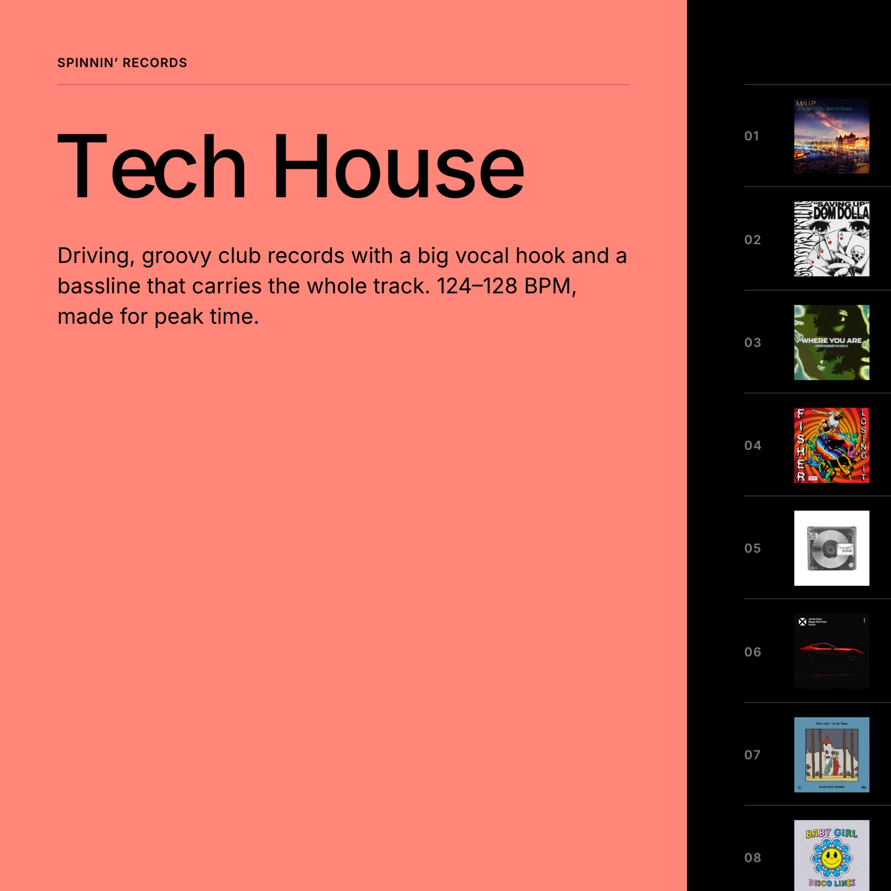

Social Banner Creator
Turns one piece of key art into banners for every platform. Label logo and colours applied automatically.
Cover Converter
Standardises any cover to a 2000×2000 JPG at 72 DPI. Centered on a black canvas.
Sessions Asset Generator
Fills in artist and episode number for Spinnin' Sessions Radio. Draws them onto all 9 official templates.
Thumbnail Maker
Places a label overlay, logo included, on top of any background image. Exports as a 1920×1080 PNG thumbnail.
Song Briefing
Fills in a one-page song briefing for an artist, photo and Spotify playlist included. Exports as a 1920×1080 vector PDF.

General Briefing
Builds the Spinnin' Records genre and trend briefing: label logos and genre pages with tracks pulled from Spotify links. Exports as a multi-page vector PDF.
Click the star on a tool to keep it here and at the top of the sidebar.